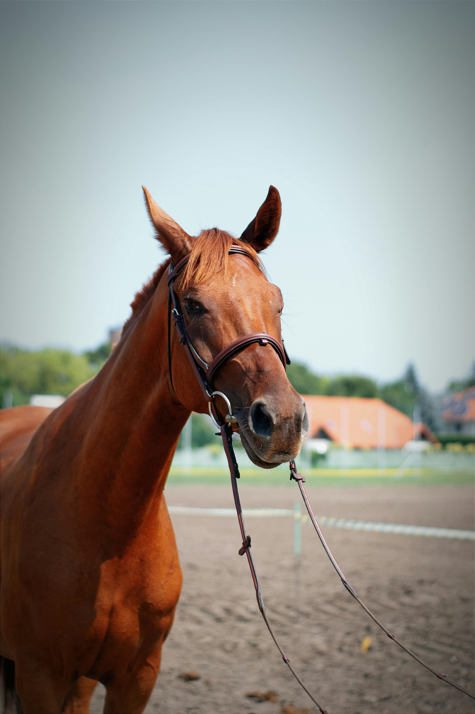
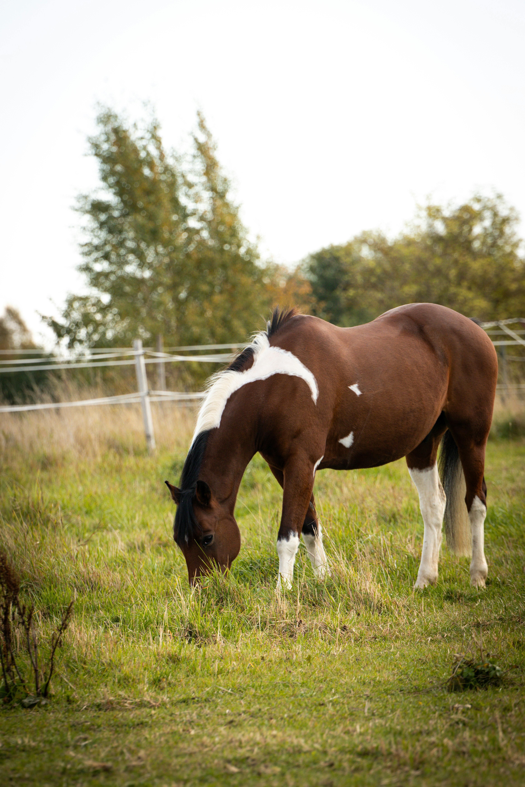
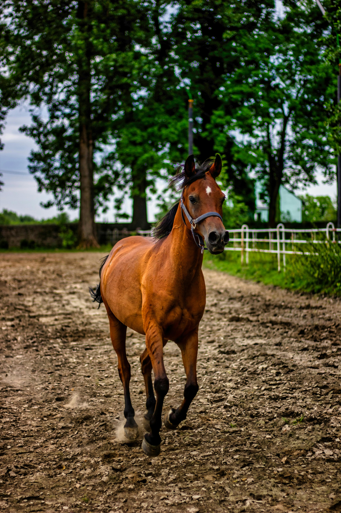
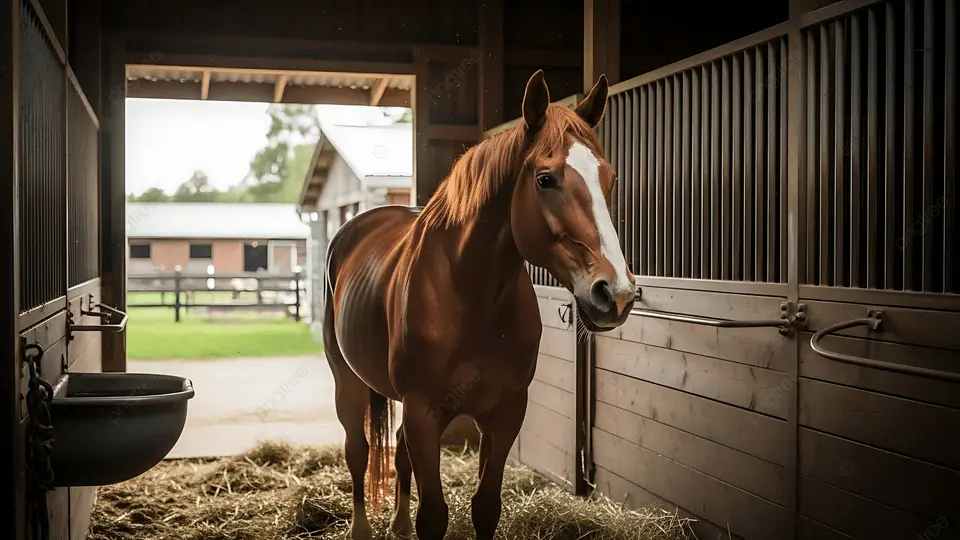

| السلالة | عربي أصيل (عبيان) |
|---|---|
| العمر | 7 سنوات |
| المهارة الرئيسية | القفز الاستعراضي والتحمل |
| اللون | بني محروق (كميت) |
عنتر هو أحد أجمل وأقوى الخيول في الإسطبل، وهو بطل متوج فاز بعدة جوائز في مسابقات الجمال والقدرة. يتميز عنتر بشخصية قيادية وهيبة لا تخطئها العين، فهو يمتلك وقفة شامخة تعبر عن عزة الخيول العربية.
خضع عنتر لتدريبات مكثفة على يد أفضل المدربين، مما جعله يمتلك مهارات استثنائية في القفز والحركات الاستعراضية، وهو يجسد الأصالة والشجاعة في أبهى صورها.